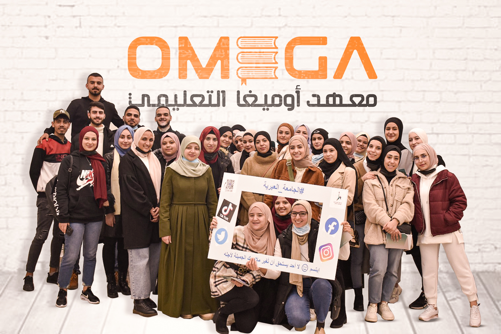

معهد أوميغا التعليمي
تأسس معهد أوميغا عام 2009 في القدس، ليساهم في تلبية حاجة المجتمع المقدسي في تعلم اللغة العبرية بطريقة صحيحة. منذ ذلك الوقت تخرج من المعهد ما يزيد عن 3000 طالب وطالبة في المسارات المختلفة. يقدم المعهد خدمة تعليم اللغة العبرية كلغة ثانية عن طريق أساليب تعليم حديثة، متدرجة وملائمة للمجتمع المقدسي.
يعمل في معهد أوميغا اليوم 18 معلم ومعلمة لغة عبرية أصحاب خبرة، جميعهم لغتهم الأم هي العبرية وحاصلون على شهادة تأهيل لتعليم اللغة العبرية كلغة ثانية من الجامعة العبرية أو من كليات مختصة أخرى.
مدير المعهد هو الأستاذ خالد سلهب، معلم للغة العبرية كلغة ثانية، طالب في قسم الماجستير بتخصص اللغة العبرية في الجامعة العبرية وحاصل على شهادة لتعليم اللغة العبرية من مدرسة روثبيرغ في الجامعة العبرية ويعلم اللغة العبرية منذ عام 2012 في الجامعة العبرية وفي معهد أوميغا.
يؤمن المعهد بأن استخدام اللغة هو أفضل طريق لتعلمها، لذا نحرص في برامجنا التعليمية في كل مستويات اللغة على وضع استخدام المادة المتعلمة في المركز، ونفعل ذلك بطريقة تفاعلية. بناءً على ذلك، يكون شكل الحصص في المعهد أقرب الى الورشات منها الى المحاضرات، حيث يكون جميع الطلاب متفاعلين أثناء الحصة لضمان تعلمهم للغة بطريقة صحيحة.
بالإضافة الى دورات اللغة العبرية، يفعّل المعهد مسار "أوميغا جولد"؛ السنة التحضيرية للطلاب الذين أنهوا سنة التوجيهي ويطمحون الى الانضمام للجامعات والكليات الاسرائيلية. هذا المشروع يشمل تعليم اللغة العبرية والبسيخومتري، الارشاد الأكاديمي ومساق الكتابة الجامعية، بالإضافة الى مسار التطوع الذي من شأنه اكتشاف الطلاب لمجالات العمل في الشركات والمؤسسات المختلفة، وصقل شخصيته وإكسابه الفرصة للتعرف على مهاراته. في نهاية هذه السنة يستطيع الطالب التقدم لإمتحانات القبول المختلفة للجامعات والكليات في البلاد.
يؤمن المعهد بأن البيئة الاجتماعية الحاضنة والداعمة لها دور أساسي في تعزيز دافعية الطالب للتعلم، من هنا يحرص المعهد على تأمين هذه البيئة وتوفير الدعم الكامل من الناحية الاجتماعية والأكاديمية لجميع الطلاب.
يعمل في معهد أوميغا اليوم 18 معلم ومعلمة لغة عبرية أصحاب خبرة، جميعهم لغتهم الأم هي العبرية وحاصلون على شهادة تأهيل لتعليم اللغة العبرية كلغة ثانية من الجامعة العبرية أو من كليات مختصة أخرى.
